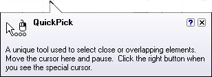

User assistance
Add to Teamcenter Interactive user assistance makes command information available as you perform tasks. You can access command, conceptual, reference, and instructional information any time during a session.
In addition, Add to Teamcenter Interactive provides several learning tools that can be activated from the Help menu.
Add to Teamcenter Interactive offers the following important user assistance features.
User interface help features
-
ToolTips — help you identify a user interface element, including command icons, option buttons, and other gadgets. When you point the cursor at a user interface element, a label displays the name of the command and a brief description of what it is. Where appropriate, the accelerator key combination that you can use to invoke the command is displayed. There may also be an informational graphic as well as a pointer to additional Help.

-
Command Tips — provide contextual assistance as you work with Add to Teamcenter Interactive.
Help
Add to Teamcenter Interactive provides links to Help from the Help window displayed when you click the Help in the application window.
You can also press F1 whenever you need Help during a session. When a command is active, the Help topic for that command or dialog box displays. If no command is active, then the table of contents for the Help topic displays.
One of the most widely used features of Help is the search function. Follow these tips to get the most out of searching Help.
-
To narrow your search results, group elements of your search using double quotes or parentheses.
Example:To get information about the Zoom slider but not other zoom functions, type “zoom slider” in the search box, and then click List Topics.
-
To widen your search results or when you are not sure what something is called, use wildcard expressions to search for words or phrases. Wildcard expressions allow you to search for one or more characters using a question mark or asterisk.
Example:The search string dimension* displays topics that contain the term “dimension”, “dimensional”, and so on.
-
To search for topics that include all forms of a word, use the Match Similar Words option.
Example:For example, a search for the word “add” will find “add”, “adds”, and “added”.
-
To find topics where the keyword is of primary focus, set the Search Titles Only option before you start your search.
-
Sort results alphabetically. After you have searched, click the Title column header to sort the generated topic list alphabetically.
-
Searches are not case-sensitive.
Learning tools
-
A comprehensive library of Solid Edge tutorials is available in every release. You can find them on the Learn page, as well as by clicking the Tutorials link in the Overview of Solid Edge help window.
-
Self-paced activities are available in Solid Edge. You can find them in Solid Edge Help in Support Center.
-
You can use the About Add to Teamcenter Interactive command on the Help menu to see the software version and license information.
How do I
Manipulate columnsCopy column settings to other users
Specify the appearance of columns (SEEC)
Display Help topics
Display Information about Add to Teamcenter Interactive
Learn more
Basic window operationsLook up more details
Best Fit commandBest Fit by Row command
Columns command (SEEC)
Hide (columns) command
Format Columns dialog box (SEEC)
About Add to Teamcenter Interactive command
Exit command